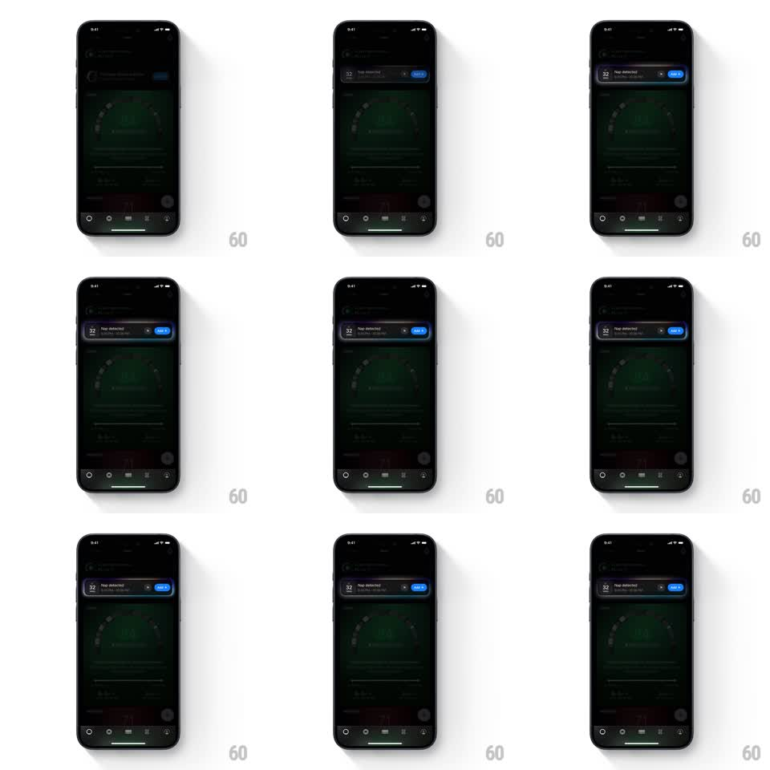

Media
Frame-by-frame

Rebuild this animation 1:1: Ultrahuman's "Nap detected" event card - a dark detected-event card where the "Add it" CTA button carries a continuous soft glow pulse, gently demanding action while the rest of the ring-metrics screen stays still.

Rebuild this animation 1:1: Ultrahuman's "Nap detected" event card - a dark detected-event card where the "Add it" CTA button carries a continuous soft glow pulse, gently demanding action while the rest of the ring-metrics screen stays still.
## Integration
Integration: stack-agnostic spec - springs given as stiffness/damping, timed motions as duration + curve; map every value to your framework and animation library of choice.
## Scene
Dark health app: a slim event card pinned near the top ("32 Nap detected" with a small ring icon, close X, and a blue "Add it" button), above a large faint recovery gauge and metrics list. Tab bar at bottom.
## Motion spec
Pattern: looping CTA pulse.
- The "Add it" button breathes: a blue glow (box-shadow / radial halo) swells and fades around it (1.8s ease-in-out, peak opacity ~0.6).
- The button itself holds a subtle scale on the same cycle (1 -> 1.04 -> 1).
- Card entrance (first appearance): card slides down from the screen top with a soft spring (~280/24, 400ms) - after that, only the button pulses.
- Nothing else on screen animates.
## Calibration
- The glow is the pulse; scale is barely perceptible.
- 1.8s is calm - faster reads as an alarm, slower goes unnoticed.
## Reduced motion
Button holds a static 40% glow; card appears without motion.
## Don't miss
- The card floats over content with a real shadow; it is dismissible via the X (reverse slide-up, 250ms).
- Blue is the app's accent - the glow uses it at reduced saturation, not pure neon.